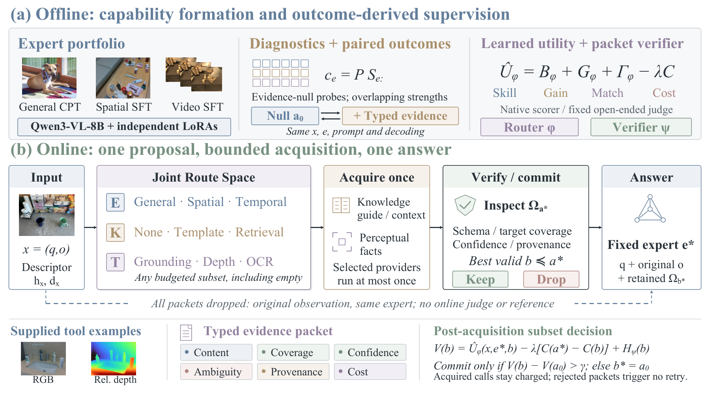
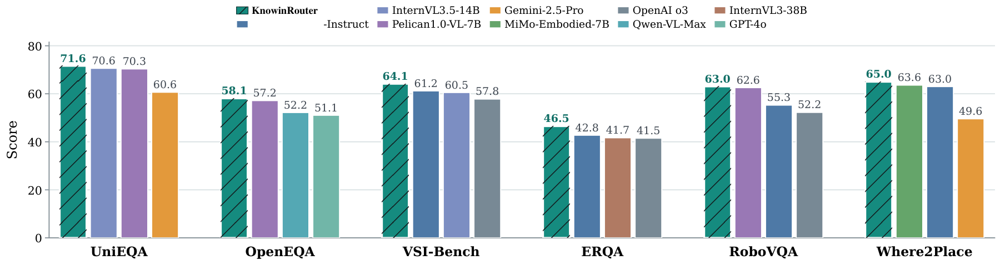
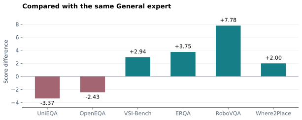
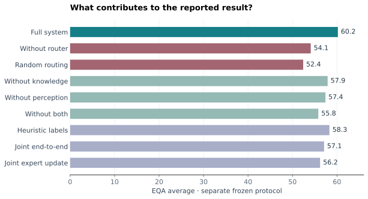
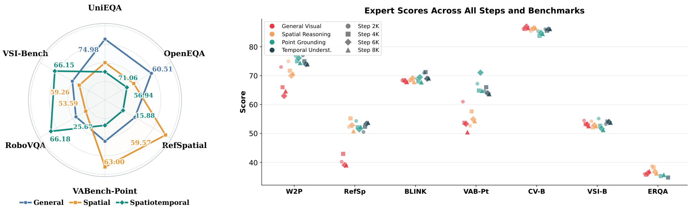
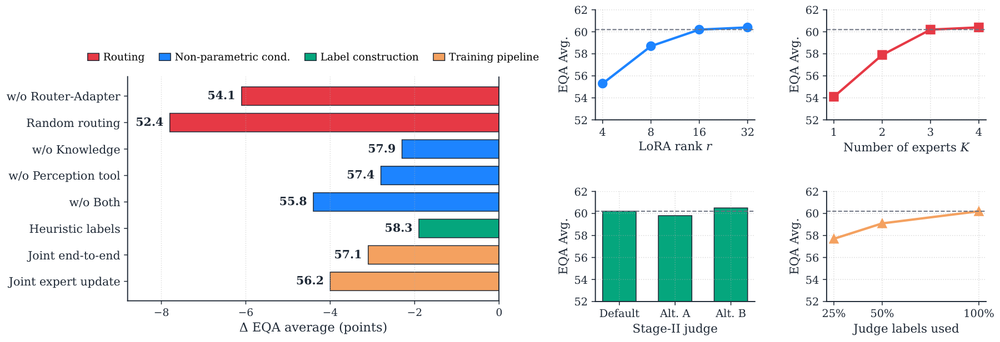
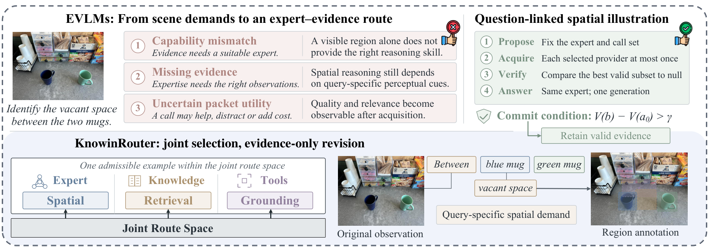

Measured, overlapping strengths
General, Spatial Reasoning and Spatiotemporal experts share the frozen backbone. Evidence-free diagnostic outcomes describe capabilities without imposing a hierarchy.
Choose the expert and the evidence together. Verify what comes back. Let the same expert answer once.
Knowin's first internal Mixture-of-LoRA (MoL) solution: independent capability adapters on a shared Qwen3-VL-8B backbone. An internal milestone, not an academic priority claim.
If all evidence is rejected, keep the original input and the selected expert. No online answer judge. No retry loop.
The same evidence can help one expert and distract another. KnowinRouter scores the complete expert–knowledge–tool tuple before making any external call.

General, Spatial Reasoning and Spatiotemporal experts share the frozen backbone. Evidence-free diagnostic outcomes describe capabilities without imposing a hierarchy.
Choose one expert, optional knowledge and any admissible tool subset. Explicit null actions preserve an evidence-free path for every expert.
Inspect schema, coverage, confidence, ambiguity and provenance. Compare valid subsets with null while holding the already-paid acquisition cost fixed.
Cross-system comparisons, matched expert controls and the separate ablation protocol answer different questions. Their scores are not interchangeable.
Q1 · Higher is better. The manuscript combines reproduced, official API and externally reported scores; cross-system protocol identity is not established.

| Benchmark | UniEQA | OpenEQA | VSI-Bench | ERQA | RoboVQA | Where2Place |
|---|---|---|---|---|---|---|
| Native score | 71.6 | 58.1 | 64.1 | 46.5 | 63.0 | 65.0 |
Q4 · Complete Table 1 from the supplied manuscript. All scores are higher-is-better. Scroll horizontally on small screens. Cross-system averages do not establish matched before/after retention.
| Model | MMBench v1.1 | MMStar | MMMU | AI2D | MathVista-mini | TextVQA | ChartQA | DocVQA | HallusionBench | POPE | Avg. |
|---|---|---|---|---|---|---|---|---|---|---|---|
| LLaVA-OV-7B | 80.8 | 61.7 | 48.8 | 82.0 | 63.2 | 77.6 | 80.0 | 87.5 | 47.3 | 87.5 | 71.6 |
| MiniCPM-V2.6 | 78.0 | 57.5 | 49.8 | 82.1 | 60.6 | 80.1 | 79.3 | 90.5 | 48.1 | 87.0 | 71.3 |
| Cambrian-8B | 75.9 | 57.6 | 42.7 | 79.7 | 49.0 | 71.7 | 73.3 | 77.8 | 41.6 | 86.5 | 65.6 |
| InternVL2-8B | 79.4 | 61.5 | 51.2 | 83.8 | 58.3 | 77.4 | 83.3 | 91.6 | 45.0 | 86.4 | 71.8 |
| InternVL2.5-8B | 82.2 | 62.8 | 56.0 | 84.5 | 64.4 | 78.2 | 84.7 | 92.9 | 49.3 | 88.5 | 74.4 |
| Qwen2-VL-7B | 80.5 | 60.7 | 54.1 | 83.0 | 58.2 | 84.3 | 83.0 | 93.9 | 42.4 | 87.3 | 72.7 |
| Qwen3-VL-8B | 74.9 | 42.9 | 47.0 | 46.7 | 32.8 | 83.1 | 83.5 | 95.8 | 51.3 | 88.3 | 64.6 |
| SpatialBot-3B | 58.2 | 39.1 | 31.4 | 56.7 | 35.0 | 50.2 | 48.1 | 56.3 | 36.2 | 81.5 | 49.3 |
| SpatialRGPT-7B | 72.3 | 52.8 | 43.5 | 74.6 | 49.1 | 70.5 | 68.4 | 78.0 | 41.0 | 85.7 | 63.6 |
| ManipVQA-7B | 69.5 | 50.2 | 40.3 | 71.5 | 46.8 | 67.0 | 65.3 | 75.2 | 38.8 | 83.7 | 60.8 |
| LEO-7B | 70.8 | 51.4 | 41.7 | 72.0 | 47.3 | 68.8 | 66.7 | 76.5 | 39.5 | 84.9 | 62.0 |
| KnowinRouter (8B) | 81.9 | 63.2 | 57.8 | 84.3 | 61.5 | 83.9 | 84.2 | 93.8 | 47.9 | 88.3 | 74.7 |
Matched six-task comparison against the same General expert. Reported mean gain: +1.78. These controls are separate from the cross-system figure.

Editable redraw from numerical values in Section 4.2; source values.
Expert choice accounts for the largest component effect. Knowledge and perception supply different information, and can also introduce conflicting or ambiguous evidence.

From the evidence-free variant (55.8), knowledge alone recovers 1.6 points and perception alone 2.1. Together they recover 4.4: a paper-reported complementarity of 0.7 points under this ablation protocol.
In the separate nine-benchmark evidence-null control, question-conditioned expert selection reaches 60.24 versus 58.49 for the best fixed expert. Reported gain: +1.75, with media-grouped 95% CI [1.25, 2.26].


Illustrative · not a model prediction
The paper's mug example explains the decision sequence. This interactive trace uses synthetic packets; it makes no claim about a measured answer.

The router jointly selects the Spatial Reasoning expert, a reference-frame template and grounding. The finite budget is checked before any provider runs.
The expert stays fixed after this stepmode: illustrative / synthetic expert: Spatial Reasoning knowledge: reference-frame template tools: [grounding] answer_generations: 0
The actual CPU demo follows the same bounded API with explicit mock components. Run the demo and tests ↗


* James Cheng, corresponding author · rwlinno@gmail.com
Code, tests and a weight-free CPU demo are released. Original research predictions, logs, data and weights remain unavailable.
Public source, install/configuration paths, unit tests, training and evaluation entry points, the project preprint and a minimal LaTeX upload package.
HF model and data repositories are documentation-only placeholders. There are no downloadable weights or datasets and no promised release date. View the collection ↗
Original PDF figures are reused with attribution to the supplied manuscript. Editable sources are available for the newly drawn numerical charts and project logo. The original figure-authoring files were not supplied. The source package is prepared for arXiv/Overleaf; no arXiv identifier is claimed.
@misc{ruan2026knowinrouter,
title={KnowinRouter: Expert--Evidence Alignment
for Embodied Vision--Language Models},
author={Ruan, Weilin and Xu, Yingjie and
Wei, Yangkai and Zhou, Bohan and Li, Shuaibo
and Chen, Harold Haodong and Zhou, Kaiwen
and Li, Yinchuan and Cheng, James},
year={2026},
howpublished={Project preprint},
url={https://knowin-29.github.io/KnowinRouter.github.io/}
}